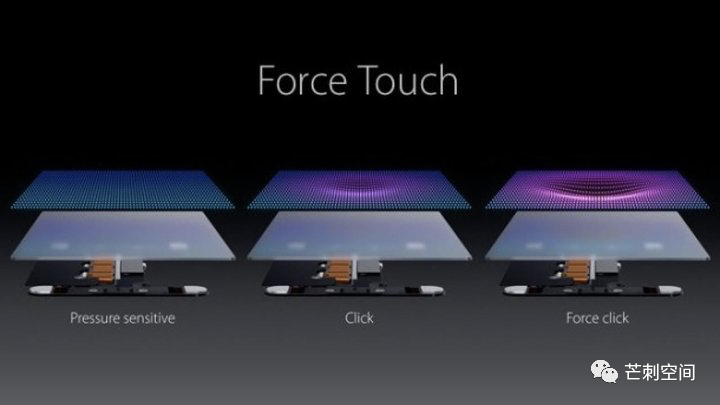

从 3D Touch 诞生的那一天起，我就等待着它被砍掉的那一天。虽然期间，我用得很开心。
谨以此文纪念一次“极富”想象的人机交互创新。

3D Touch & Force Touch
Force touch：2015 款 MacBook Pro 触控板、初代 Apple Watch 首次引入，Apple Watch Series 6 开始被拿掉。
3D touch：iPhone 6S上首发，在 iPhone XR上开始被拿掉。
3D Touch 虽然叫法上和 Force Touch 有所区别，但核⼼的原理是⼀样的，都是⽤振动⻢达和压感模拟出压⼒维度的按压和反馈，只是在使⽤⽅法上略有区别，3D Touch 会更为细致⼀些，但个⼈认为这 基本上算是苹果为了更好的营销这项技术⽽将其硬⽣⽣拆分成两个名词。
https://www.ifanr.com/1370685
还记得那个手感吗？我掏出 iPhone 8 试了一下，3D Touch 还在，但似乎已经不是完整版本了。重压下触发的 Peek 速度还是比长按触发的 Peek 要快。但是 Pop 已经没有了。
Peek（轻压）能让用户通过当前环境之上的临时窗口来预览一个对象，比如预览页面、链接、文件。用手指稍微重按某个对象，就可以实现Peek功能（在该对象支持Peek功能的前提下）。抬起手指，则退出Peek界面。如果想要打开这个对象浏览更多细节，稍微加重按压该对象的力度，就会弹出全屏窗口，这个动作称为Pop（重压）。
https://blog.naaln.com/2016/07/ios-10-design-2/
我为何断言其“失败”
为什么我从它诞生的那一天就等待着它离开呢？很简单：
（1）iOS 之前的长按会触发应用删除功能，Android 已经有长按触发小控件的优秀案例了。如果适当调整长按的时间，较短的时长触发小控件，较长的时长触发应用删除功能，是能够满足用户心理预期的。
（2）Peek 和 Pop 具备的学习成本和记忆成本，相对于其收效过低了。Peek 预览，可以通过长按预览来实现。Pop 可以通过长按加上滑等当作来实现。至于 Peek 后上滑触发工具栏，也可以控制上下滑动的距离和动效来实现同等效果。
（此处假设插入了我3年前为本文截取的 Android 图片）
现在则是遇到更加技术上的原因：为了继续做薄手机，这个占空间的模组自然也就可以拿来砍了。
用户习惯和惰性是极强的。当主要需求 80% 以上可以轻松满足时，花费额外精力学习掌握新的技能是不太乐意的。特别地，3D Touch 不如触控本身直观，也没有像切水果一样的游戏来帮助他们学习，刚刚上市时也不是所有的第三方软件都做了适配，而且适配之后的收益如此地低。我何苦来的呢？
所以，无论这是一次多么有趣和有价值的人机交互尝试（特别是打破二维局限的第三维，就够小小激动一次了），它最后也会慢慢离开。
值得庆幸的是，Haptic Touch 留了下来。也就是长按。（手动 doge）
当然，Mac 上的 Force Touch 还在，且行且珍惜。
几个有趣的用法
尽管预见了它的衰亡，我还是用得很开心。我有两个很好的场景：
（1）截图专用小圆点：辅助触控小圆点打开，顶层按钮保留一个，且不触发任何操作，将小圆点3D触控设置为截图。这样平时小圆点随便拖拽不误触，截图时用力一按，干净利落！
（2）微信小红点消除器：微信一直不采用QQ的小红点消除技术，不知道是不是QQ做了专利保护。当3D Touch打开时，Peek 一下，再放开，一个群的小红点就消除了。其效果，和按破充气泡膜上的小气泡一样，可惜声音不够大，否则足够解压。
期待你重现江湖的那一天。
参考文章：